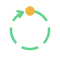

From Planning for Months to Building in the Room
Speed comes from who is in the room and when the guardrails are set, so the work moves fast without cutting a corner.
Plan for Months, Then Build
Scope for weeks, build behind closed doors, deliver once, and hope it fits. Every change pulls the whole team back together.
Build It Together, Now
Frame the end game, build a real draft in the room, refine in short loops, and launch in days or weeks. Changes are small and fast.
One Cycle, Four Example Projects
Pick an example to see how the same five moves carry a one day project, a blocked project, three projects at once, and a finished product.
05 tend leads back to 01 frame when the need changes
The examples are illustrative scenarios from the Reimagine IT guide. They show how the cycle works and do not describe real records.
Experts Build It In, Not Bolt It On
Every project brings one person from each area it touches who can decide and act on the spot. What leaves the room is ready to trust.
Project Owner
Builds with an AI partner, runs the loop, and owns the result.
Project Manager
Protects a short timebox, picks the room, and owns the launch message.
Business Analyst
Turns reactions into the next build list, live in the room.
IAM and Security Partner
Sets up access in the room so it works on day one.
Academic Partner
Speaks for faculty and students and tests the workflow.
Program Partner
Brings the real process and often becomes the owner.
Applications Partner
Connects to campus systems and supports it after launch.
UX Design Partner
Shapes layout, language, and accessibility during Build it.
Campus Communications
Writes the launch message in the words users use.
The owner builds. The experts check. If you cannot see it or use it, it is not done.
Moving Fast Without Moving Recklessly
Guardrails are set once, up front, so no project waits on approvals to start.
- Work happens only in university approved AI tools
- Access uses university accounts, so only the right people get in
- The room decides up front what information the project may use
- Experts review during Build it and Loop it, not after launch
- Every project has one named owner and a backup
- Stagger Build it so each expert sits in one build at a time
- Name a backup for every partner role
- Keep one shared list with one row per project
- Let automated checks carry the routine
- When an expert is in too many rooms, leadership decides which project waits
One Idea, Easy to Remember
A way of working only spreads if people can say it, draw it, and recognize it. Reimagine IT has a name, a five word chant, and a mark that shows the loop.

Reimagine ITFRAME BUILD LOOP LAUNCH TENDFrame ItSet the end game. An hour or less.
Build ItPlan and build together. Hours to a day.
Loop ItRefine in short bursts. Days to weeks.
Launch ItTest group or everyone. When it is ready.
Tend ItImprove continuously. Then frame it again.
- If you cannot see it or use it, it is not done
- Right people, short time
- Show, do not spec
- The owner builds. The experts check.
- Change is cheap, so change often
Download the Mark
A concept mark I drew for this page. The amber point is Frame it, where every cycle starts and returns.


Questions That Open the Room
For the person leading the room. Ask, then let them answer.
- What problem costs your team the most hours each week?
- Can you say it in one sentence someone outside your office would understand?
- What would you want to see or use by the end of Build it?
- Who needs to be in the room to finish this project safely?
- What is the fastest way to get feedback back into the work?
- What is good enough for version one?
- Should this launch to a test group first, or to everyone?
- Who needs to hear about it, and in whose words?
- If a change took 30 minutes, what would you ask for first?
- Who owns the result when the owner is out?
- Which part of your job is a gate today, and could it become a guardrail?
- What do you know that a builder cannot learn without you?
- Six months from now, what should take a day instead of a semester?
- What will you do with the hours these tools give back?
- Which of our steps reduce real risk, and which exist only because we have always done them?
- What would you need to see to trust work built by someone without tech in their title?
A Life Cycle Any Team Can Run
Reimagine IT gives a team one shared end game, a draft people can touch on day one, a record that answers an audit in minutes, and a product that keeps improving after launch. I designed it, wrote the guide, and lead the change that goes with it.
Talk With Me About It Read the Guide (PDF) See My Case Studies